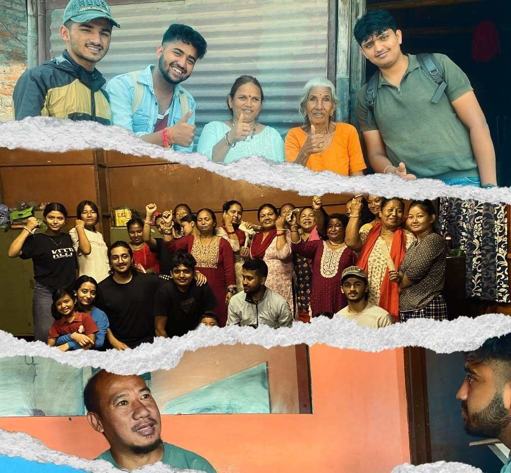

About Navigo Nepal
Navigo Nepal is a youth-led, non-profit organization dedicated to empowering junior high school students to confidently navigate their futures by bridging the gap between academic learning and real-world skills. We aim to equip students with the essential knowledge, skills, and opportunities needed to become capable learners, responsible citizens, and global leaders.
Through interactive sessions, hands-on experiences, and nationwide outreach, we provide exposure to scholarships, career paths, and community leadership, encouraging students to explore their potential beyond the classroom. Our programs, which include informative seminars, competitions, and club management workshops, emphasize teamwork, personal development, and innovative thinking.

At Navigo Nepal, we are committed to transforming the educational landscape by fostering an environment where students can discover their passions, set meaningful goals, and contribute positively to their communities, guided by our mantra: Learn, Lead, and Lift.